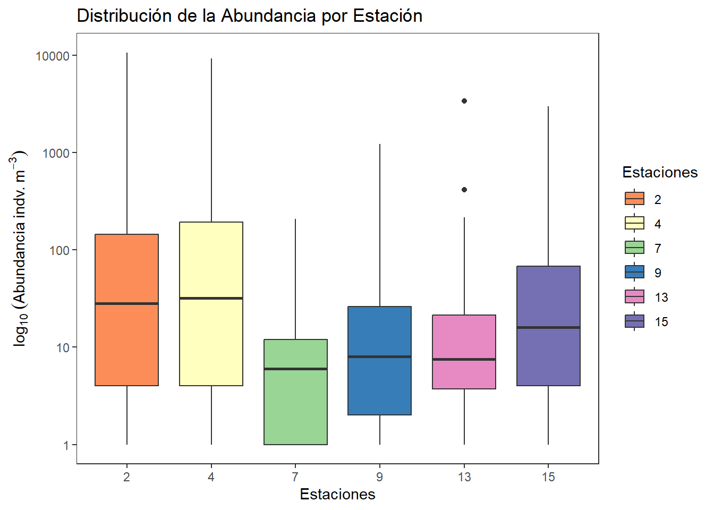
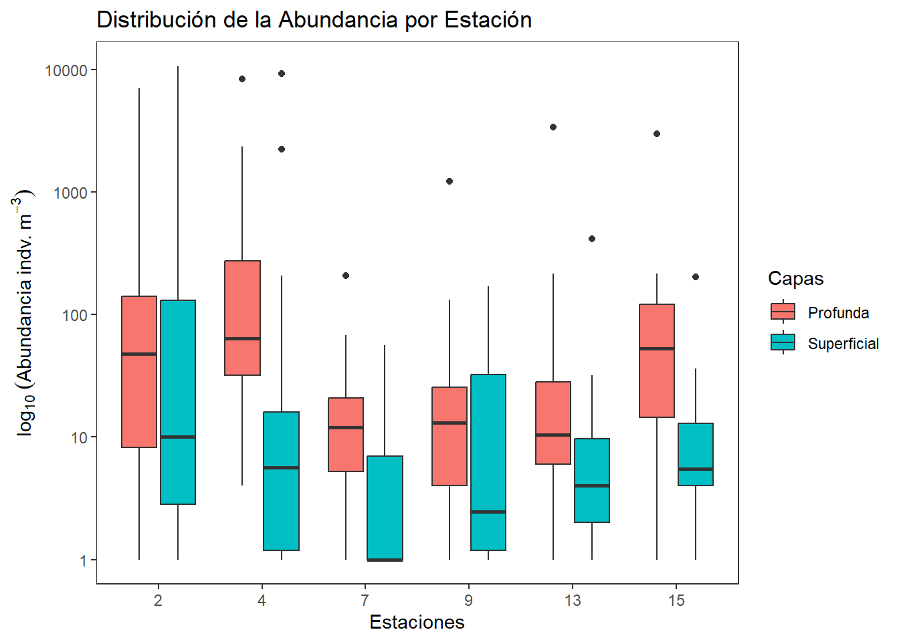
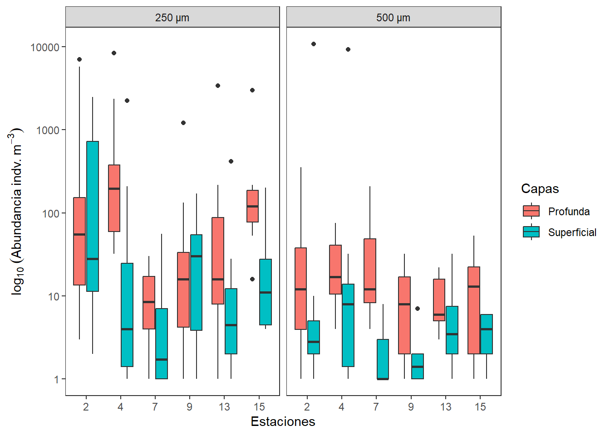
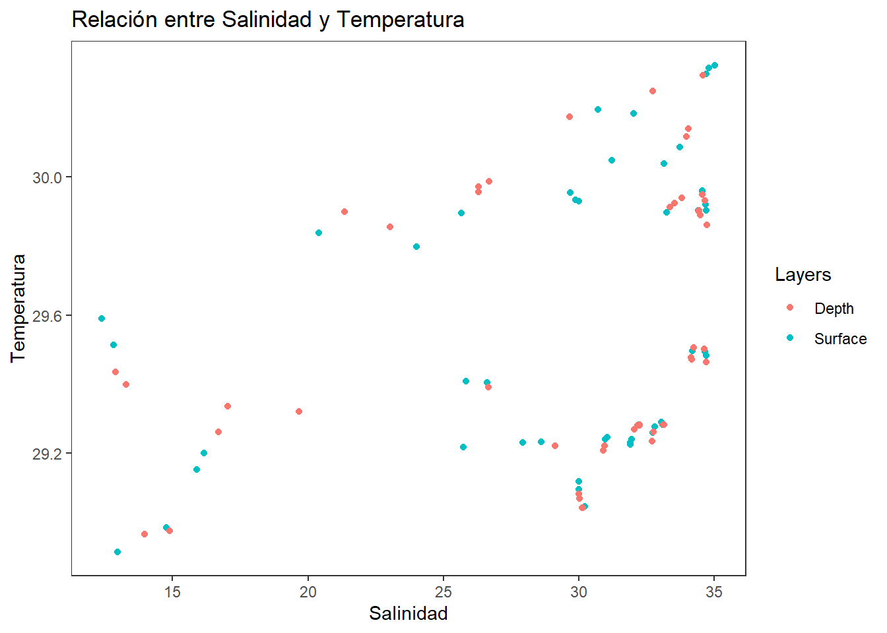
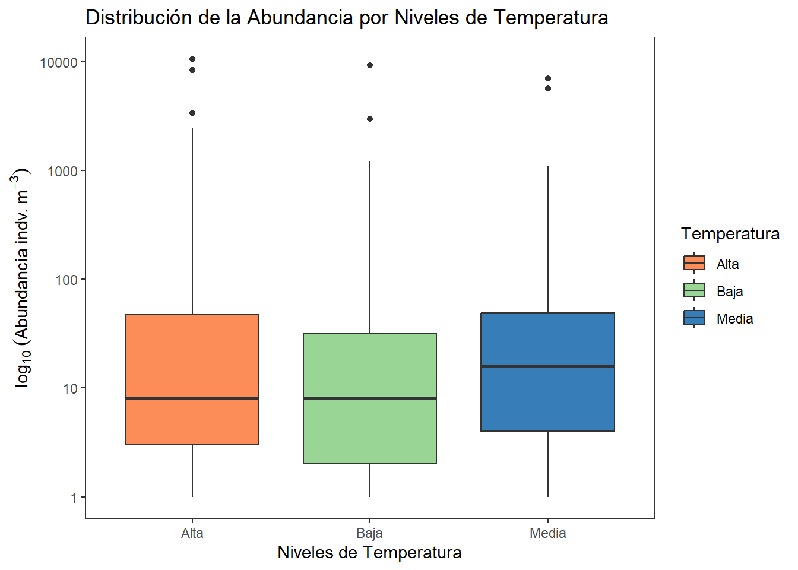

# install.packages("tidyverse") # Descomentar si no está instalado
library(tidyverse)
library(readxl)Resumen
El presente taller tiene por objeto, brindar pautas generales para el manejo y visualización de datos biológicos en el lenguaje tidyverse de R. Se realizan algunas operaciones generales usando una base de datos de plancton, que incorpora variables biológicas y ambientales.
Taller 2. Manejo de datos biológicos y ambientales

Introducción
Se realizarán ejercicios con los comandos generales de tidyverse en el manejo y visualización de datos, utilizando como ejemplo la base de datos de plancton en un estuario de Colombia (biol).
La base de datos “Riqueza” tiene 498 registros y 8 columnas, incluyendo:
- Variables categóricas o factores:
Station(Estación, numérica pero categórica en contexto)Size(Tamaños de malla del plancton)Layers(Capas o estratos en el gradiente de profundidad)Groups(Grupos de plancton)
- Variables cuantitativas:
Abundance(Abundancia de los grupos de plancton)Temperature(Temperatura del agua)Salinity(Salinidad del agua)Density(Densidad de organismos)
Instalación y carga de paquetes
Para trabajar con tidyverse, primero debemos instalar y cargar los paquetes requeridos.
Carga y exploración de datos
Utilizamos glimpse para ver la estructura general de la base de datos y summary para obtener estadísticas descriptivas.
# Cargar datos desde Excel
biol <- read_xlsx("plancton.xlsx", sheet = "Riqueza")
# Explorar estructura
# glimpse(biol)
# summary(biol)Selección y filtrado
select permite escoger columnas específicas, mientras que filter se usa para seleccionar filas según condiciones.
# Seleccionar variables clave
datos_select <-
biol %>%
select(Station, Size, Layers, Abundance, Temperature, Salinity)# Filtrar datos por una condición específica (ejemplo: temperatura > 28°C)
datos_temp <-
biol %>%
filter(Temperature > 28)Creación de nuevas variables
mutate se usa para generar nuevas variables derivadas de otras columnas.
# Crear una nueva variable de relación Abundancia/Temperatura
biol <-
biol %>%
mutate(Abundance_Temp_Ratio = Abundance / Temperature)Resumen estadístico de datos agrupados
group_by permite agrupar datos según categorías para luego aplicar funciones resumen como mean(), sd(), ….
# Resumen estadístico de un factor "datos_resumidos"
datos_resumidos <-
biol %>% # Base de datos resumida
group_by(Station) %>% # Factor o variable agrupadora
summarise(datos.m = mean(Abundance, na.rm = TRUE), # Media de cada grupo del factor
datos.de = sd(Abundance, na.rm = TRUE), # Desviacioes estándar de cada grupo
datos.var = var(Abundance, na.rm = TRUE), # Varianzas de cada grupo
n.Ab = n(), # Tamaño de cada grupo
datos.ee = sd(Abundance, na.rm = TRUE)/
sqrt(n())) # Error estándar de cada grupoAgrupamos los datos por Station, Size y Layers y calculamos estadísticas descriptivas clave como la temperatura, salinidad, densidad y la abundancia total. Esto permite obtener un resumen general de las condiciones ambientales y biológicas en diferentes estaciones y capas de muestreo.
# Resumen estadístico de dos factores "datos_resumidos1"
datos_resumidos1 <-
biol %>% # Base de datos resumida
group_by(Station, Size, Layers) %>% # Factor o variable agrupadora
summarise(datos.m = mean(Abundance, na.rm = TRUE), # Media de cada grupo del factor
datos.de = sd(Abundance, na.rm = TRUE), # Desviacioes estándar de cada grupo
datos.var = var(Abundance, na.rm = TRUE), # Varianzas de cada grupo
n.Ab = n(), # Tamaño de cada grupo
datos.ee = sd(Abundance, na.rm = TRUE)/
sqrt(n())) # Error estándar de cada grupoTransformación de datos
pivot_longer cambia la estructura de los datos de ancho a largo.
# Convertir datos de formato ancho a largo
formato_largo <-
biol %>%
pivot_longer(cols = c(Temperature, Salinity, Density),
names_to = "Environmental_Variable",
values_to = "Value")pivot_wider regresa los datos a su formato original (ancho).
# Convertir de formato largo a ancho
formato_ancho <-
formato_largo %>%
pivot_wider(names_from = Environmental_Variable,
values_from = Value,
values_fn = first)Transposición de datos
La siguiente transformación convierte la matriz de datos resumiendo en filas a los grupos taxonómicos y en columnas a las estaciones.
# Agrupa a los taxones en filas y a las estaciones en columnas
biol_transp <-
biol[,c(1,3:5)] %>%
group_by(Station, Groups) %>%
summarise(Abundance = sum(Abundance, na.rm = TRUE), .groups = "drop") %>%
pivot_wider(names_from = Station, values_from = Abundance)Unión de datos
Podemos unir bases de datos con left_join. Para este ejercicio se crea la variable categórica Regiones
# Crear una base de datos adicional de regiones
Regiones <-
tibble(Station = c(2, 4, 7, 9, 13, 15),
Region = c("North", "South", "East", "West", "Central", "Others"))
# Unir la información por estación
biol1 <-
biol %>%
left_join(Regiones, by = "Station")Abreviar nombres de grupos biológicos
Para facilitar la visualización y manipulación de datos, podemos abreviar los nombres de los grupos biológicos utilizando abbreviate(). Esto es útil cuando trabajamos con nombres largos que dificultan la lectura en gráficos y tablas.
biol <-
biol %>%
mutate(Abrev = abbreviate(Groups, minlength = 4))Conversión de variables categóricas
Convertimos Station, Size y Layers en factores para asegurar que R las reconozca como variables categóricas y optimizar análisis posteriores.
biol <-
biol %>%
mutate(across(c(Station, Size, Layers), as.factor))Visualización de factores
ggplot2 nos permite crear gráficos para explorar los datos. Se genera una figura de cajas para visualizar las diferencias en la abundancia del plancton, entre las diferentes estaciones del estuario evaluado.
# Gráfico de caja de la abundancia por estación
ggplot(biol, aes(x = factor(Station), y = Abundance)) +
geom_boxplot(aes(fill = factor(Station))) +
scale_y_continuous(trans = "log10") + # Aplicar la transformación logarítmica
scale_fill_manual(values = c('#fc8d59','#ffffbf','#99d594','#377eb8','#e78ac3','#7570b3')) +
labs(title = "Distribución de la Abundancia por Estación",
x = "Estaciones", fill = "Estaciones",
y = expression(log[10]~(Abundancia~indv.~m^-3))
) +
theme_bw() +
theme(
panel.grid.major = element_blank(),
panel.grid.minor = element_blank()
)
# probar sacale_fill_manual, con: scale_color_viridis(discrete = TRUE)Con el comando aes(fill = Layers) se incorporan las capas superficial y profunda en las diferentes zonas.
library(forcats) # Para manipulación de factores
# Cambiar etiquetas de Layers con recode_factor()
biol <-
biol %>%
mutate(Layers = recode_factor(Layers,
"Depth" = "Profunda",
"Surface" = "Superficial"))
# Gráfico de caja de la abundancia por estación
ggplot(biol, aes(x = factor(Station), y = Abundance)) +
geom_boxplot(aes(fill = Layers)) +
scale_y_continuous(trans = "log10") + # Aplicar la transformación logarítmica
labs(title = "Distribución de la Abundancia por Estación",
x = "Estaciones", fill = "Capas",
y = expression(log[10]~(Abundancia~indv.~m^-3))
) +
theme_bw()+
theme(
panel.grid.major = element_blank(),
panel.grid.minor = element_blank()
)
La capa facet_wrap() permite incluir más factores como el del ojo de malla usado para la colecta del plancton.
library(ggplot2)
library(dplyr)
library(readxl)
library(forcats) # Para manipulación de factores
library(viridis)
# Cambiar etiquetas de Layers con recode_factor()
biol <-
biol %>%
mutate(Layers = recode_factor(Layers,
"Depth" = "Profunda",
"Surface" = "Superficial"))
# Crear gráfico con etiquetas de valores atípicos redondeados
ggplot(biol, aes(x = factor(Station), y = Abundance)) +
geom_boxplot(aes(fill = Layers)) +
labs(
x = "Estaciones", fill = "Capas",
y = expression(log[10]~(Abundancia~indv.~m^-3))
) +
scale_y_continuous(trans = "log10") + # Aplicar la transformación logarítmica
scale_color_viridis(discrete = TRUE) +
facet_wrap(~ Size , nrow = 1, strip.position = "top") +
theme_bw() +
theme(
panel.grid.major = element_blank(),
panel.grid.minor = element_blank()
)
Categorizar una variable contínua
En algunos casos, es útil transformar una variable continua en una categórica para facilitar la comparación y visualización de datos. En este caso, convertimos Salinity en una variable categórica con tres niveles: “Baja”, “Media” y “Alta”.
1. Método basado en cuantiles
Este método divide la variable en tres partes iguales (terciles) utilizando los cuantiles de la distribución. En el siguiente ejercicio se crea una variable categórica llamada Salinity_Level.
# Librería
library(kableExtra)
Adjuntando el paquete: 'kableExtra'The following object is masked from 'package:dplyr':
group_rows# Método de quantiles
biol <-
biol %>%
mutate(Salinity_Level = case_when(
Salinity <= quantile(Salinity, 1/3, na.rm = TRUE) ~ "Baja",
Salinity <= quantile(Salinity, 2/3, na.rm = TRUE) ~ "Media",
Salinity <= quantile(Salinity, 3/3, na.rm = TRUE) ~ "Alta"
))
# tabla con los datos
head(biol) %>%
kbl() %>%
kable_classic(full_width = F)| Station | Size | Layers | Groups | Abundance | Temperature | Salinity | Density | Abundance_Temp_Ratio | Abrev | Salinity_Level |
|---|---|---|---|---|---|---|---|---|---|---|
| 2 | 250 μm | Superficial | Quetognatos | 0 | 30.29749 | 34.69981 | 21.417828 | 0.0000000 | Qtgn | Alta |
| 2 | 250 μm | Superficial | Sergestidae | 0 | 29.40959 | 25.83323 | 15.085254 | 0.0000000 | Srgs | Baja |
| 2 | 250 μm | Superficial | Luciferidae | 0 | 29.59008 | 12.38513 | 5.729643 | 0.0000000 | Lcfr | Baja |
| 2 | 250 μm | Superficial | Calanoida | 32 | 30.29749 | 34.69981 | 21.417828 | 1.0561930 | Clnd | Alta |
| 2 | 250 μm | Superficial | Cyclopoida | 4 | 29.40959 | 25.83323 | 15.085254 | 0.1360100 | Cycl | Baja |
| 2 | 250 μm | Superficial | Harpacticoida | 2 | 29.59008 | 12.38513 | 5.729643 | 0.0675902 | Hrpc | Baja |
# datos_resum1 %>%
# kbl(caption = "", booktabs = F,longtable = T) %>%
# kable_classic(full_width = F, html_font = "Cambria")
# Se puede resumir el nivel alto por el comando "TRUE ~ "Alta"". ### **Distribución de la Abundancia por Niveles de Salinidad**
ggplot(biol, aes(x = Salinity_Level, y = Abundance)) +
geom_boxplot(aes(fill = Salinity_Level)) +
scale_y_continuous(trans = "log10") + # Aplicar la transformación logarítmica
scale_fill_manual(values = c('#fc8d59','#99d594','#377eb8')) + # Colores personalizados
labs(title = "Distribución de la Abundancia por Niveles de Salinidad",
x = "Niveles de Salinidad", fill = "Salinidad",
y = expression(log[10]~(Abundancia~indv.~m^-3))
) +
theme_bw() +
theme(
panel.grid.major = element_blank(),
panel.grid.minor = element_blank()
)2. Método basado en summary()
Otra forma de categorizar Salinity es usar la función summary() para obtener los valores clave de la variable y definir manualmente los rangos.
summary(biol$Salinity) Min. 1st Qu. Median Mean 3rd Qu. Max.
12.39 25.83 31.04 28.50 33.81 35.03 Con base en estos valores, podemos definir los niveles de salinidad según su distribución:
biol <-
biol %>%
mutate(Salinity_Level = case_when(
Salinity < 30 ~ "Baja",
Salinity >= 30 & Salinity < 35 ~ "Media",
Salinity >= 35 ~ "Alta"
))
# tabla con los datos
head(biol) %>%
kbl() %>%
kable_classic(full_width = F)| Station | Size | Layers | Groups | Abundance | Temperature | Salinity | Density | Abundance_Temp_Ratio | Abrev | Salinity_Level |
|---|---|---|---|---|---|---|---|---|---|---|
| 2 | 250 μm | Superficial | Quetognatos | 0 | 30.29749 | 34.69981 | 21.417828 | 0.0000000 | Qtgn | Media |
| 2 | 250 μm | Superficial | Sergestidae | 0 | 29.40959 | 25.83323 | 15.085254 | 0.0000000 | Srgs | Baja |
| 2 | 250 μm | Superficial | Luciferidae | 0 | 29.59008 | 12.38513 | 5.729643 | 0.0000000 | Lcfr | Baja |
| 2 | 250 μm | Superficial | Calanoida | 32 | 30.29749 | 34.69981 | 21.417828 | 1.0561930 | Clnd | Media |
| 2 | 250 μm | Superficial | Cyclopoida | 4 | 29.40959 | 25.83323 | 15.085254 | 0.1360100 | Cycl | Baja |
| 2 | 250 μm | Superficial | Harpacticoida | 2 | 29.59008 | 12.38513 | 5.729643 | 0.0675902 | Hrpc | Baja |
# Se puede resumir el nivel alto por el comando "TRUE ~ "Alta"". Este método permite una categorización más detallada sobre los valores de corte, basado en información ambiental del lugar o de estudios previos.
Cuestionario en clase
# Cargar datos desde Excel
library(readxl)
biol <- read_xlsx("plancton.xlsx", sheet = "Riqueza")1. Exploración de datos
Pregunta: ¿Cuántas observaciones hay por cada categoría de Size?
biol_n <-
biol %>%
group_by(Size) %>%
summarize(count = n())
# tabla con los datos
head(biol_n) %>%
kbl() %>%
kable_classic(full_width = F)| Size | count |
|---|---|
| 250 μm | 282 |
| 500 μm | 216 |
Pregunta: ¿Cuántas observaciones hay por cada Size y Layers?
# Generar 3 columnas Size, Layers y count (observaciones)
biol_n <-
biol %>%
group_by(Size, Layers) %>%
summarize(count = n())
# tabla con los datos
head(biol_n) %>%
kbl() %>%
kable_classic(full_width = F)| Size | Layers | count |
|---|---|---|
| 250 μm | Depth | 144 |
| 250 μm | Surface | 138 |
| 500 μm | Depth | 72 |
| 500 μm | Surface | 144 |
2. Filtrado condicional
Pregunta: Encuentra todas las observaciones donde la salinidad (Salinity) es mayor a 35.
# Datos con salinidad mayor a 35
muestras_salin <-
biol %>%
filter(Salinity > 35)
# tabla con los datos
head(muestras_salin) %>%
kbl() %>%
kable_classic(full_width = F)| Station | Size | Layers | Groups | Abundance | Temperature | Salinity | Density |
|---|---|---|---|---|---|---|---|
| 2 | 500 μm | Surface | Calanoida | 10 | 30.32395 | 35.02545 | 21.6553 |
| 2 | 500 μm | Surface | Larvas de Crustaceo | 0 | 30.32395 | 35.02545 | 21.6553 |
| 2 | 500 μm | Surface | Calanoida | 0 | 30.32395 | 35.02545 | 21.6553 |
| 2 | 500 μm | Surface | Larva Zoea | 0 | 30.32395 | 35.02545 | 21.6553 |
3. Creación de variables
Pregunta: Calcula una nueva variable que sea la relación entre Density y Temperature.
# Insertar la columna Densiti_Temp -> relación de las dos variables
biol <-
biol %>%
mutate(Density_Temp = Density / Temperature)
# tabla con los datos
head(biol) %>%
kbl() %>%
kable_classic(full_width = F)| Station | Size | Layers | Groups | Abundance | Temperature | Salinity | Density | Density_Temp |
|---|---|---|---|---|---|---|---|---|
| 2 | 250 μm | Surface | Quetognatos | 0 | 30.29749 | 34.69981 | 21.417828 | 0.7069175 |
| 2 | 250 μm | Surface | Sergestidae | 0 | 29.40959 | 25.83323 | 15.085254 | 0.5129365 |
| 2 | 250 μm | Surface | Luciferidae | 0 | 29.59008 | 12.38513 | 5.729643 | 0.1936339 |
| 2 | 250 μm | Surface | Calanoida | 32 | 30.29749 | 34.69981 | 21.417828 | 0.7069175 |
| 2 | 250 μm | Surface | Cyclopoida | 4 | 29.40959 | 25.83323 | 15.085254 | 0.5129365 |
| 2 | 250 μm | Surface | Harpacticoida | 2 | 29.59008 | 12.38513 | 5.729643 | 0.1936339 |
Pregunta: Calcula una nueva variable con la relación entre Abundance y Density.
# Insertar la columna Abundance_Density -> relación de las dos variables
biol <-
biol %>%
mutate(Abundance_Density = Abundance / Density)
# tabla con los datos
head(biol) %>%
kbl() %>%
kable_classic(full_width = F)| Station | Size | Layers | Groups | Abundance | Temperature | Salinity | Density | Density_Temp | Abundance_Density |
|---|---|---|---|---|---|---|---|---|---|
| 2 | 250 μm | Surface | Quetognatos | 0 | 30.29749 | 34.69981 | 21.417828 | 0.7069175 | 0.0000000 |
| 2 | 250 μm | Surface | Sergestidae | 0 | 29.40959 | 25.83323 | 15.085254 | 0.5129365 | 0.0000000 |
| 2 | 250 μm | Surface | Luciferidae | 0 | 29.59008 | 12.38513 | 5.729643 | 0.1936339 | 0.0000000 |
| 2 | 250 μm | Surface | Calanoida | 32 | 30.29749 | 34.69981 | 21.417828 | 0.7069175 | 1.4940824 |
| 2 | 250 μm | Surface | Cyclopoida | 4 | 29.40959 | 25.83323 | 15.085254 | 0.5129365 | 0.2651596 |
| 2 | 250 μm | Surface | Harpacticoida | 2 | 29.59008 | 12.38513 | 5.729643 | 0.1936339 | 0.3490619 |
| mp | Abund |
|---|
4. Resumen estadístico
Pregunta: Calcula los valores máximos, mínimos, la mediana, el rango y el coeficiente de variación de abundancia por cada combinación de Size y Layers.
# Resumen estadístico "datos_resum"
datos_resumidos <-
biol %>% # Base de datos resumida
group_by(Layers) %>% # Factor o variable agrupadora
summarise(datos.me = median(Abundance, na.rm = TRUE), # Mediana de cada grupo del factor
datos.ran = max(Abundance, na.rm = TRUE) -
min(Abundance, na.rm = TRUE), # Rango de cada grupo
datos.coef = sd(Abundance, na.rm = TRUE)/
mean(Abundance, na.rm = TRUE), # Coeficiente de variación
)
# tabla con los datos
head(datos_resumidos) %>%
kbl() %>%
kable_classic(full_width = F)| Layers | datos.me | datos.ran | datos.coef |
|---|---|---|---|
| Depth | 5 | 8344 | 5.039513 |
| Surface | 0 | 10672 | 8.346253 |
5. Transformación de datos
Pregunta: Convierte los datos ambientales (Temperature, Salinity, Density) a formato largo.
# Temperature, Salinity, Density a formato largo
formato_largo <-
biol %>%
pivot_longer(cols = c(Temperature, Salinity, Density),
names_to = "Measurement",
values_to = "Value")
# tabla con los datos
head(formato_largo) %>%
kbl() %>%
kable_classic(full_width = F)| Station | Size | Layers | Groups | Abundance | Density_Temp | Abundance_Density | Measurement | Value |
|---|---|---|---|---|---|---|---|---|
| 2 | 250 μm | Surface | Quetognatos | 0 | 0.7069175 | 0 | Temperature | 30.29749 |
| 2 | 250 μm | Surface | Quetognatos | 0 | 0.7069175 | 0 | Salinity | 34.69981 |
| 2 | 250 μm | Surface | Quetognatos | 0 | 0.7069175 | 0 | Density | 21.41783 |
| 2 | 250 μm | Surface | Sergestidae | 0 | 0.5129365 | 0 | Temperature | 29.40959 |
| 2 | 250 μm | Surface | Sergestidae | 0 | 0.5129365 | 0 | Salinity | 25.83323 |
| 2 | 250 μm | Surface | Sergestidae | 0 | 0.5129365 | 0 | Density | 15.08525 |
6. Visualización de una relación de variables
Pregunta: Crea un gráfico de dispersión donde el eje X sea la salinidad (Salinity) y el eje Y la temperatura (Temperature), diferenciando por Layers.
ggplot(biol, aes(x = Salinity, y = Temperature, color = Layers)) +
geom_point() +
labs(title = "Relación entre Salinidad y Temperatura",
x = "Salinidad", y = "Temperatura") +
theme_bw() +
theme(
panel.grid.major = element_blank(),
panel.grid.minor = element_blank()
)
7. Visualización de una variable categorizada
Pregunta: Categoriza a la temperatura en tres niveles y visualizar su relación con la abundancia.
Paso 1: Categorizar la Temperatura
Utilizar cuantiles, transformamos Temperature en tres niveles: Baja, Media y Alta.
biol <-
biol %>%
mutate(Temperature_Level = case_when(
Temperature <= quantile(Temperature, 1/3, na.rm = TRUE) ~ "Baja",
Temperature <= quantile(Temperature, 2/3, na.rm = TRUE) ~ "Media",
TRUE ~ "Alta"
))
# tabla con los datos
head(biol) %>%
kbl() %>%
kable_classic(full_width = F)| Station | Size | Layers | Groups | Abundance | Temperature | Salinity | Density | Density_Temp | Abundance_Density | Temperature_Level |
|---|---|---|---|---|---|---|---|---|---|---|
| 2 | 250 μm | Surface | Quetognatos | 0 | 30.29749 | 34.69981 | 21.417828 | 0.7069175 | 0.0000000 | Alta |
| 2 | 250 μm | Surface | Sergestidae | 0 | 29.40959 | 25.83323 | 15.085254 | 0.5129365 | 0.0000000 | Media |
| 2 | 250 μm | Surface | Luciferidae | 0 | 29.59008 | 12.38513 | 5.729643 | 0.1936339 | 0.0000000 | Media |
| 2 | 250 μm | Surface | Calanoida | 32 | 30.29749 | 34.69981 | 21.417828 | 0.7069175 | 1.4940824 | Alta |
| 2 | 250 μm | Surface | Cyclopoida | 4 | 29.40959 | 25.83323 | 15.085254 | 0.5129365 | 0.2651596 | Media |
| 2 | 250 μm | Surface | Harpacticoida | 2 | 29.59008 | 12.38513 | 5.729643 | 0.1936339 | 0.3490619 | Media |
Paso 2: Visualizar la Relación entre Temperatura y Abundancia
ggplot(biol, aes(x = Temperature_Level, y = Abundance)) +
geom_boxplot(aes(fill = Temperature_Level)) +
scale_y_continuous(trans = "log10") + # Aplicar la transformación logarítmica
scale_fill_manual(values = c('#fc8d59','#99d594','#377eb8')) + # Colores personalizados
labs(title = "Distribución de la Abundancia por Niveles de Temperatura",
x = "Niveles de Temperatura", fill = "Temperatura",
y = expression(log[10]~(Abundancia~indv.~m^-3))
) +
theme_bw() +
theme(
panel.grid.major = element_blank(),
panel.grid.minor = element_blank()
)